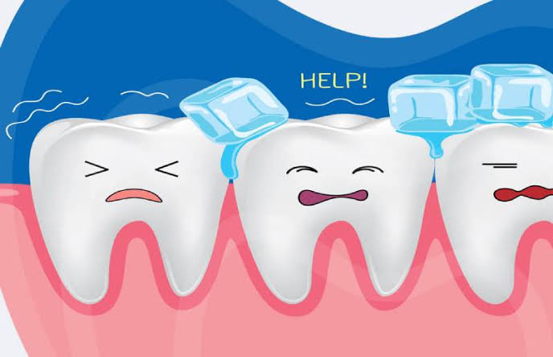

علت حساس شدن دندان به سرما و گرما چیست؟

حساسیت دندان یکی از مشکلات رایج دهان و دندان است که باعث ایجاد درد کوتاه و ناگهانی هنگام مصرف نوشیدنیهای سرد، گرم یا مواد شیرین میشود. این مشکل معمولاً به دلیل نمایان شدن بخش حساس داخل دندان ایجاد میشود.
دلایل حساس شدن دندان
- سایش مینای دندان: مسواک زدن با فشار زیاد یا استفاده طولانی از مواد ساینده میتواند مینای دندان را ضعیف کند.
- عقب رفتن لثه: با عقب رفتن لثه، قسمت حساس ریشه دندان نمایان میشود.
- پوسیدگی دندان: پوسیدگی میتواند باعث نزدیک شدن عوامل تحریککننده به عصب دندان شود.
- ترک خوردگی دندان: ترکهای دندان ممکن است باعث انتقال سرما و گرما به بخشهای داخلی دندان شوند.
علائم دندان حساس
- درد ناگهانی هنگام خوردن غذای سرد
- حساسیت هنگام نوشیدن مایعات گرم
- درد هنگام خوردن مواد شیرین
- درد کوتاه ولی شدید در دندان
چگونه حساسیت دندان را کاهش دهیم؟
- استفاده از خمیر دندان مخصوص دندانهای حساس
- مسواک زدن با فشار ملایم
- کاهش مصرف نوشیدنیهای بسیار سرد و گرم
- مراجعه به دندانپزشک برای بررسی علت اصلی
چه زمانی باید به دندانپزشک مراجعه کرد؟
اگر حساسیت دندان شدید باشد، مدت زیادی ادامه پیدا کند یا همراه با درد مداوم باشد، ممکن است نشانه پوسیدگی یا مشکل عصب دندان باشد و نیاز به بررسی تخصصی دارد.
سوالات متداول
چرا دندان به سرما و گرما حساس میشود؟
معمولاً به دلیل نازک شدن مینای دندان، عقب رفتن لثه، پوسیدگی یا تحریک عصب دندان ایجاد میشود.
آیا حساسیت دندان از بین میرود؟
بسته به علت آن، با درمان مناسب و رعایت مراقبتهای دهان و دندان میتوان حساسیت را کاهش داد.
آیا دندان حساس نشانه پوسیدگی است؟
گاهی اوقات بله. حساسیت میتواند یکی از علائم اولیه پوسیدگی یا آسیب مینای دندان باشد.